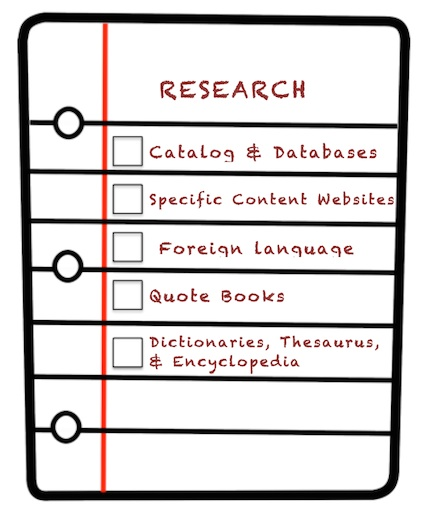

Module 2: Research
Module 2
Online Research
Catalog and Database
Catalog & Database Activity
Foreign Language Resources
Content Specific Websites
Tutoring
Dictionaries, Thesaurus, Encyclopedias
Dictionary Activity
Quote Books
References
Assessment
Certificate
